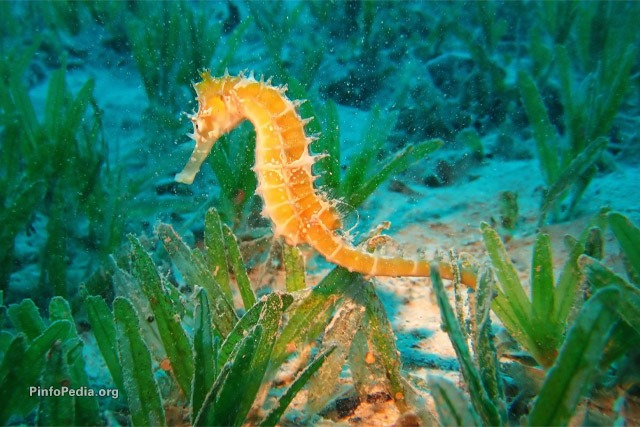

اسب دریایی یا اسب ماهی یک نوع ماهی از خانواده سوزنماهیان است که در آبهای حارهای و معتدل سرتاسر جهان یافت میشود. طول بدن اسب های دریایی از ۱۶ میلیمتر تا ۳۵ سانتیمتر متغیر است. مشخصه ویژه این نوع ماهی ها این است که آنها معدود ماهیانی هستند که در آنها جنس ماده تخم ها را به بدن جنس نر منتقل کرده و جنس نر آنها را حمل می کند. این ماهی غیرمعمول بلند قد دارای سری به شکل اسب است و به سمت بالا شنا می کند. بیشتر اوقات اسب های دریایی بدون حرکت باقی میمانند این حالت را به صورت گیر دادن دم چسبیده خود در لابه لای مرجان ها و جلبک های دریایی انجام میدهند و با همین حرکت در مقابل دشمنان ایجاد استتار میکنند. چشمها مستقل از سر به طرفین حرکت میکنند و به این وسیله دائماً مراقبت دشمنان بوده و همچنین غذای خود را جستجو میکنند. نوع ماده این حیوان تخمهای خود را در کیسه نوع نر میریزد و در همانجا نوزادان از تخم بیرون میآیند که به شکل اسبهای دریایی کوچک میباشند. اسبهای دریایی دارای بالهای حرکتی در پشت خود هستند که بیش از ۳۵ بار در ثانیه در نوسان است. همچنین این موجودات دارای بالههای جانبی بسیار ریزی در نزدیکی پشت سر هستند که برای کنترل حرکت آنها استفاده میشود.
این ماهیان به دلیل شکل خاص خود شناگران ماهری نیستند و عمدتاً در امواج و طوفانهای سهمگین دریا به راحتی از بین میروند و تلف میشوند. حرکت این ماهیان به جلو توسط باله زدن باله کوچک پشتی آنها است که در هر ثانیه تا ۳۵ بار میتواند به لرزه درآید. بالههای کوچکتر سینهای هم نقش هدایت و فرمان را بعهده دارند. شکار بیرویه در سالهای اخیر جمعیت اسبهای دریایی را به خطر انداختهاست. اسبهای دریایی در گیاهشناسی دارویی سنتی چین مورد استفاده قرار میگیرند. در حدود ۲۰ میلیون اسب دریایی در طول یکسال صید و برای این هدف فروخته میشوند.